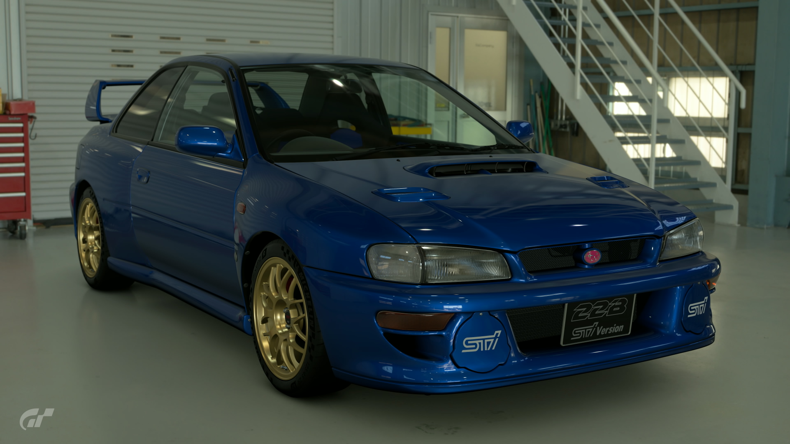
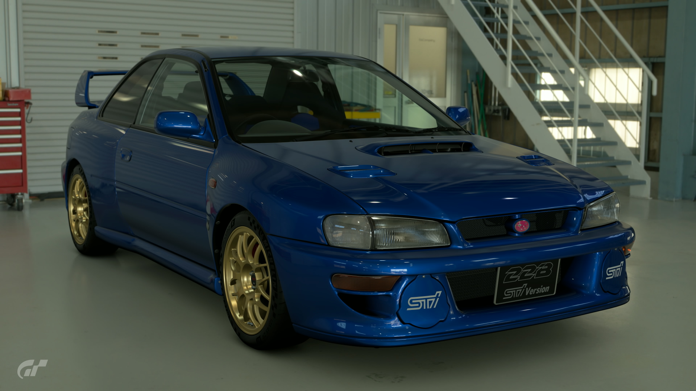

1998 Subaru Impreza 22B STi
Any fan of WRC racing in the 1990s has the Impreza 22B on their list of must-buy cars. This replica model is based on the Impreza that enjoyed such great success during the golden age of rally. Its price upon release was roughly twice that of the Impreza WRX... But the 400 units produced still sold out in an instant! This variant sports more than just updated looks—the engine is a custom 2.2L. Capable of generating more torque than the 2L turbo, it promises solid acceleration and satisfying speed.
- Used (1700 mi)
- Stock
- 5MT
- Saitama, Japan
- Sonic Blue Mica
- 350hp
¥4,250,000